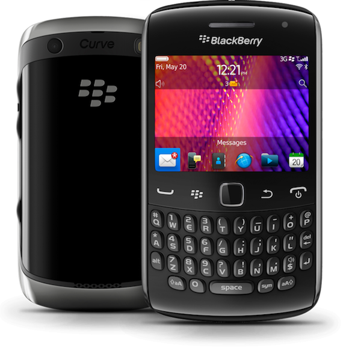

智慧型手機的發展歷程History of Smartphone
如果較為廣義地去定義智慧型手機，那最早可以多工處理通話以外功能的手機早在1992年就已經發表了。 IBM Simon 於1992年11月的COMDEX大會被發表出來，它除了最基本的通話和收發簡訊外這支手機還可以收發Email和玩遊戲。 更重要得是它還具有時下所有智慧型手機都有的觸控螢幕！
IBM SIMON
浪潮的開始
為這個百家爭鳴的時代開第一槍的無非是BlackBerry(黑莓機)。BlackBerry可以說是第一台較有發展力的智慧型手機，
更加完整的整合收發Email，BlackBerry會主動通知用戶，即時傳達重要訊息，與以往用戶需要被動的去查看信件大不相同。
除此之外，更提供了安全性上的加強、行事曆、備忘錄的同步技術…等，在各界商業人士中掀起風潮。
BlackBerry(黑莓機)
智慧型手機的時代
一開始的智慧型手機算是一昧的移植電腦的系統平台 ex:Windows平台。
當時全球著名的HTC Touch系列，便是採用微軟Windows Mobile作業系統(簡稱WM)。
在不久後的2008年，iPhone上市了。搭載了iOS系統以洗鍊簡潔的使用者介面、多點觸控和直覺性操作吸引很多使用者。
也為Apple公司後來的崛起帶來不少助力。而iPhone一上市就拿下耀眼的成績，對其他智慧型手機廠商構成極大的威脅！
此為iPhone後續版本iPhone4s
時代的巔峰
為了不讓Apple公司的iPhone專美於前，Google推出的是一個免費的手機平台 - Android。
Android介面與iOS一樣，以簡單直覺性為主要設計理念。但與iPhone不同的是，
Android的開發工具比iPhone還要開放許多，也就是說Andriod提供給外界程式設計師全部的資源，而iPhone僅開放部份資源而已。
雖然此舉讓Android手機在安全性上比不上iPhone但是卻在程式Apps方面可以擁有更多的變化。

Android Smartphone